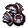

タリスマン Talisman
英語版 CrawlWiki の記事「Talisman」(0.34 向け、2026-09-22 版)の翻訳です。原文の著者は編集履歴をご覧ください。
| タリスマンを使うと、別の姿へ変身できる。タリスマンで変身したり元に戻ったりするには少しの間精神を集中させる必要があるが、それ以外の点では、使用者が自分で解くまで変身は続く。
強力なタリスマンほど変身術のスキルがいくらか必要で、足りないと変身を解くまで最大 HP が減ってしまう。変身術のスキルは、タリスマンの変身がもたらすほかの恩恵も大きくするが、弱いタリスマンではスキルが役立つ度合いに限りがある。 |
タリスマンは、変身術のスキルを使って自分の姿を変えるためのアイテムだ。
基本情報
タリスマンをPキーで身につけると、それぞれに対応した変身をする(たとえば羽根ペンのタリスマンなら針化する)。この変身はいつまでも続く。無力化されることも解呪されることもないが、タリスマンを外せばいつでも自分で元に戻れる。変身には4ターン、解除には5ターンかかる[1]。不利な変身をさせられた場合は、それが解けるとタリスマンの姿に戻る。
タリスマンはランダムアーティファクトとして出てくることもあり、その姿でいる間はランダムアーティファクトの性質がすべて働く。たとえば羽根ペンのタリスマン "Qicrucob" {rF+} なら、針化の恩恵すべてに加えて、ずっと火炎耐性が得られる。
アンデッド(ミイラ、ポルターガイスト、レヴナント)は変身できない。ジンは姿を変えることを忌み嫌い、タリスマンを使った信者を即座に破門する。
変身
変身にはそれぞれ固有の長所と短所がある。とはいえ、タリスマンの変身にはいくつか共通点がある。
- 多くのタリスマンの変身は、徒手格闘の基本ダメージを上げる。
- ほとんどの変身では特定の種類の装備が融合して、使えなくなる。たとえば鰻のタリスマンは両手を鰻に変えるので、武器、副手の装備、手袋が融合する。武器が融合する変身では、投擲もできない。
- 変身によって特定の変異が打ち消されたり、新しい変異が加わったりすることも多い。体格が変わることもある。
どの変身をしていても、銀の武器から受けるダメージが +75% になる。
スキル
変身にはそれぞれ変身術のスキルの最低値がある。スキルがこれを下回ると、最大 HP にペナルティを受ける。最低値に1レベル足りないごとに最大 HP が -10%(最大で -90%)され、さらにそれに変身のボーナスが掛けられる。
最低値より上に変身術を上げると、変身ごとに決まった恩恵が得られる。針化なら針のダメージが増え、石像なら守りがさらに固くなる、といった具合だ。変身には変身術のスキルの上限もあり、それ以上鍛えても効果はない。
タリスマンは呪文とはまったく関係がないので、知力や魔術強化などは影響しないし、トログにも嫌われない。発動アイテムではないので、発動の犠牲の影響も受けない。
入手元
タリスマンはダンジョンのあちこちや、装身具の店で見つかる。エルフの大広間:2 の刃の広間には、50% の確率で刃のタリスマンがあり、アーティファクトのこともある。地下墓地:3 の宝物部屋には、33% の確率で死のタリスマンがある。
倒すとタリスマンを落とすユニークもいる。
- @
 ルパート: 大顎のタリスマン、確率 50%
ルパート: 大顎のタリスマン、確率 50% - S
 アイズル: 大蛇のタリスマン、確率 100%(必ずアーティファクト)
アイズル: 大蛇のタリスマン、確率 100%(必ずアーティファクト) - I
 ロクサーヌ: 花崗岩のタリスマン、確率 100%
ロクサーヌ: 花崗岩のタリスマン、確率 100% - Q
 僧正坊: 嵐のタリスマン、確率 50%
僧正坊: 嵐のタリスマン、確率 50% - d
 白娘子: 竜のとぐろのタリスマン、確率 50%
白娘子: 竜のとぐろのタリスマン、確率 50% - L
 ジョセフィーナ: 死のタリスマン、確率 50%
ジョセフィーナ: 死のタリスマン、確率 50%
タリスマンの一覧
タリスマンは「段階」に分けられていて、同じ段階のものは変身術のスキルの節目が共通している。
第1段階:(スキルの最低値 0、上限 7)
 羽根ペンのタリスマン(針化)
羽根ペンのタリスマン(針化) インク壺のタリスマン(巻物)
インク壺のタリスマン(巻物)
第1.5段階:(スキルの最低値 5、上限 14)
 フラックス・ボーブル(流転)
フラックス・ボーブル(流転)
第2段階:(スキルの最低値 8、上限 14)
 変幻のタリスマン(使うと、ほかの第2段階のタリスマンに変わる)
変幻のタリスマン(使うと、ほかの第2段階のタリスマンに変わる) メデューサのタリスマン(メデューサ)
メデューサのタリスマン(メデューサ) 霜角のタリスマン(ヤク)
霜角のタリスマン(ヤク) スカラベのタリスマン(スカラベ)
スカラベのタリスマン(スカラベ) 胞子のタリスマン(胞子)
胞子のタリスマン(胞子)
第3段階:(スキルの最低値 12、上限 20)
 大顎のタリスマン(大口)
大顎のタリスマン(大口) 鰻のタリスマン(鰻の手)
鰻のタリスマン(鰻の手)
城塞のタリスマン(蟹) 人狼のタリスマン(人狼)
人狼のタリスマン(人狼) 大蛇のタリスマン(大蛇)
大蛇のタリスマン(大蛇) 蜘蛛のタリスマン(蜘蛛)
蜘蛛のタリスマン(蜘蛛) 湧泉のタリスマン(水化)
湧泉のタリスマン(水化)

第4段階:(スキルの最低値 17、上限 25)
第5段階:(スキルの最低値 23、上限 27)
*死のタリスマンだけはスキルの最低値が 26
融合する部位
| 形態 | 武器 | 副手 | 胴鎧 | 兜 | クローク | 手袋 | ブーツ | 馬甲 |
|---|---|---|---|---|---|---|---|---|
| 針 | x | x | x | x | x | |||
| インク壺 | x | x | x | x | x | x | x | x |
| 流転 | x | x | x | x | ||||
| メデューサ | x | x | ||||||
| ヤク | x | x | x | x | x | x | x | x |
| スカラベ | x | x | x | x | x | x | x | x |
| 大口 | -75% | |||||||
| 胞子 | x | x | ||||||
| 鰻 | x | x | x | |||||
| 蟹 | x | +70%~+135% | x | x | x | x | x | |
| 人狼 | x | x | x | |||||
| 大蛇 | x | x | x | x | x | x | x | |
| 蜘蛛 | x | x | x | x | x | x | x | x |
| 水 | x | |||||||
| 刃の手 | -60%~0% | |||||||
| 竜 | x | x | x | x | x | x | x | x |
| 石像 | x | x | x | x | ||||
| 巣 | x | x | ||||||
| スフィンクス | x | x | x | x | x | x | + | |
| 吸血鬼 | ||||||||
| 嵐 | x | x | x | x | x | x | x | x |
| 死 |
パーセンテージは、胴鎧による AC の増減を表す。
範囲は、タリスマンの段階に応じた変身術の最低値と上限での値を表す。
+ は、種族に関係なく、この形態ではその部位が使えるようになることを表す。
変更履歴
- 0.35 では、タリスマンを着けるのにも外すのにも5ターンかかるよう揃えられる予定だ。9月20日の時点ではまだ反映されていない。0.34 では着けるのに4ターン、外すのに5ターンかかる。
- 0.34 で胞子のタリスマンと鰻のタリスマンが追加され、大顎のタリスマンと刃のタリスマンの段階が引き上げられた。店でのタリスマンの値段も安くなった。また、タリスマンは装備品の扱いになり、(v)キーで発動するのではなく(p)キーで身につけるものになった。
- 0.33 では、新しいタリスマンが1ダースも追加された。羽根ペンのタリスマン、インク壺のタリスマン、変幻のタリスマン、メデューサのタリスマン、霜角のタリスマン、スカラベのタリスマン、城塞のタリスマン、人狼のタリスマン、蜘蛛のタリスマン、湧泉のタリスマン、蜂の巣のタリスマン、謎掛けのタリスマン、血のタリスマンなどだ。
- また、段階ごとに必要なスキルも変わった。
- 第2段階(変幻のタリスマンの段階)は 7-14 から 8-14 に。
- 第3段階(刃のタリスマンの段階)は 10-19 から 12-20 に。
- 第4段階(石像の段階)は 16-25 から 17-25 に。
出典
- ↑ delay.h:653 (0.34.0)
| 変身 | |
|---|---|
| タリスマン | 第1段階: 針化 • 巻物 第2段階: スカラベ • 胞子 • ヤク • メデューサ 第3段階: 大口 • 鰻の手 • 蟹 • 人狼 • 大蛇 • 蜘蛛 • 水化 第4段階: 刃の手 • 竜化 • 石像 • 巣 • スフィンクス • 吸血鬼(コウモリ群) 第5段階: 嵐化 • 死霊化 |
| ボーブル | 流転 |
| 不利な変身 | コウモリ • 茸化 • 豚化 • 樹化 • 霧化 • ジェリー |
| 神の力 | 殺戮 |